1 Samuel · Book Two · 1 Samuel 16–31
The Battle Is Jehovah's
David anointed among his brethren, the harp for Saul, Goliath of Gath, five smooth stones and a sling, Jonathan's covenant, Saul's spear, the skirt of Saul's robe in the cave, and Saul's end on mount Gilboa.
Start reading ›Pages
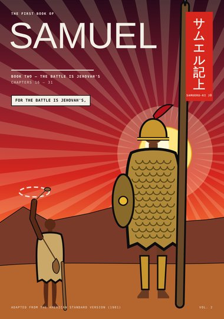
CoverCover1 Samuel 16–31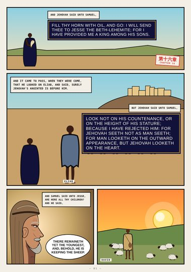
Page 1The Youngest1 Samuel 16:1–11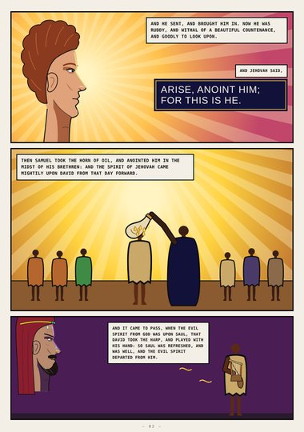
Page 2Arise, Anoint Him1 Samuel 16:12–23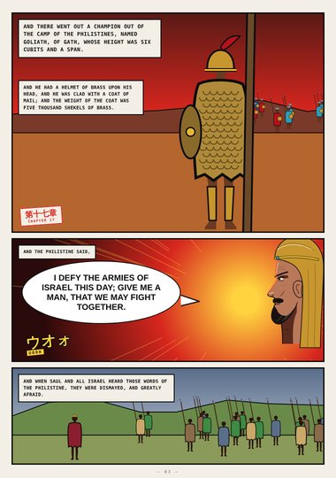
Page 3Goliath of Gath1 Samuel 17:4–11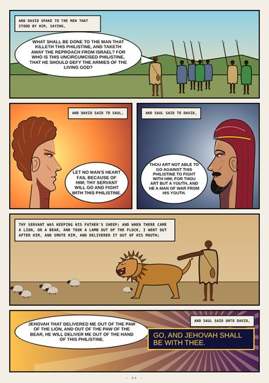
Page 4The Living God1 Samuel 17:26–37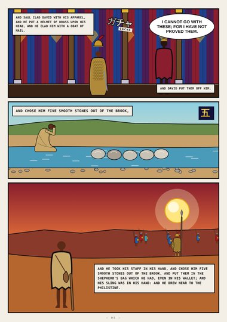
Page 5Five Smooth Stones1 Samuel 17:38–40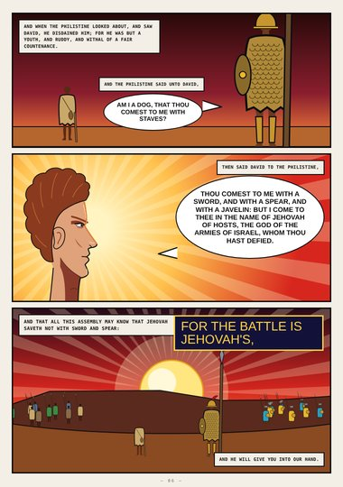
Page 6In the Name of Jehovah1 Samuel 17:42–47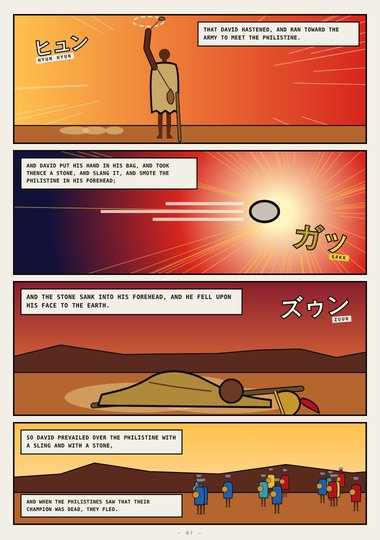
Page 7A Sling and a Stone1 Samuel 17:48–51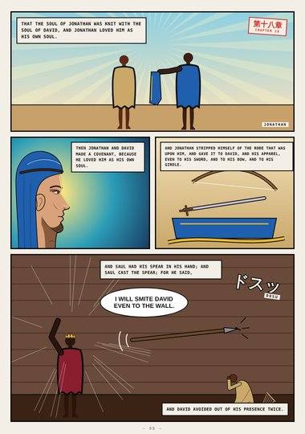
Page 8Jonathan1 Samuel 18:1–11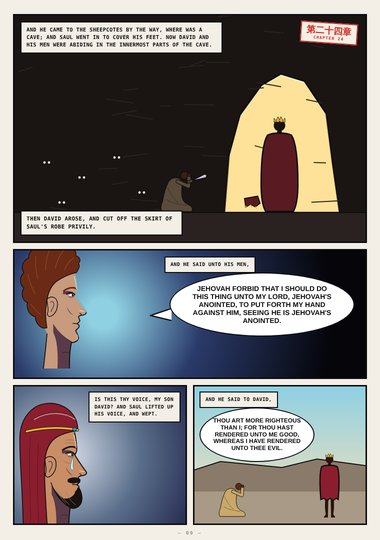
Page 9The Cave1 Samuel 24:3–17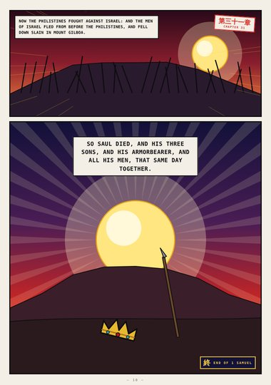
Page 10Mount Gilboa1 Samuel 31:1–6